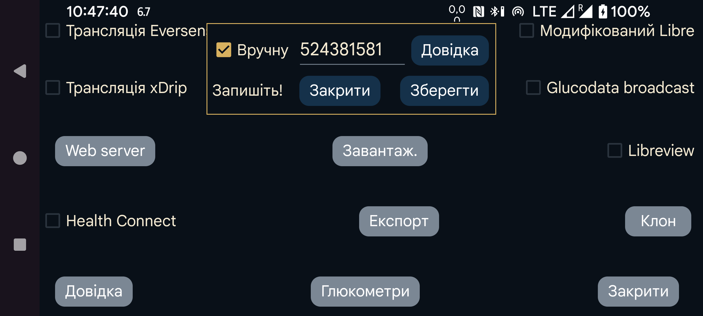

Як отримати ID облікового запису LibreView, потрібний для сканування датчика FreeStyle Libre 3 через NFC? Якщо вибрати «Вручну»,ID облікового запису можна ввести вручну. Також можна вимкнути параметр «вручну» і натиснути «З LibreView», щоб отримати ID з LibreView за адресою електронної пошти й паролем облікового запису.
Також можна спочатку отримати ID облікового запису з LibreView, а потім увімкнути «вручну» і змінити адресу електронної пошти та пароль LibreView. Якщо після цього ввімкнути «Надіслати в Libreview» і натиснути «Повторно надіслати дані», дані надсилатимуться до іншого облікового запису LibreView, але для NFC-сканування датчика й далі використовуватиметься попередній або введений вручну ID. Так Juggluco може надсилати дані до іншого облікового запису LibreView, ніж програма Abbott Libre 3.